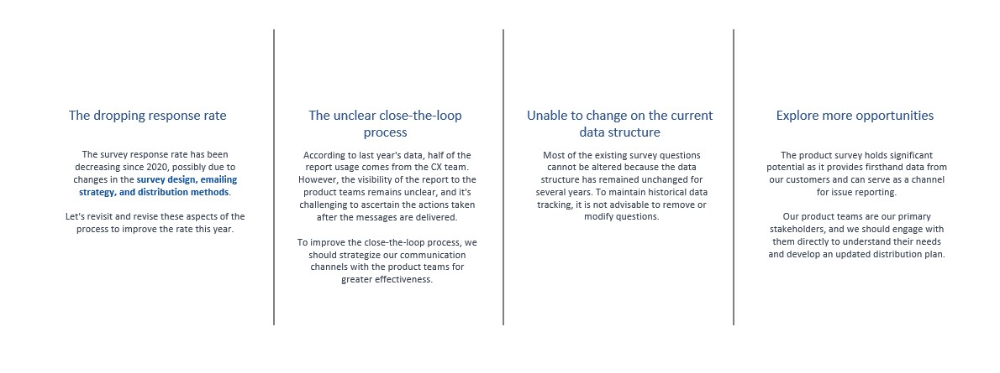
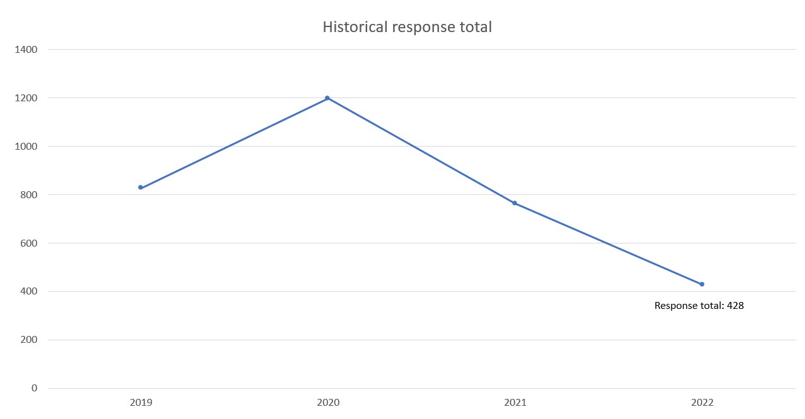
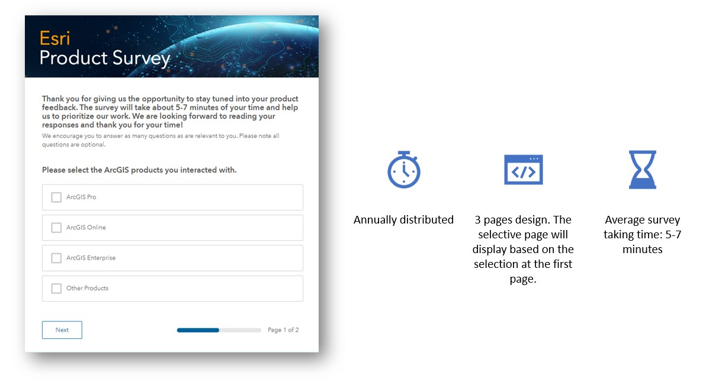
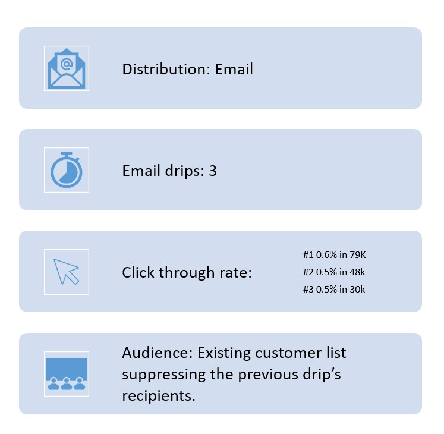
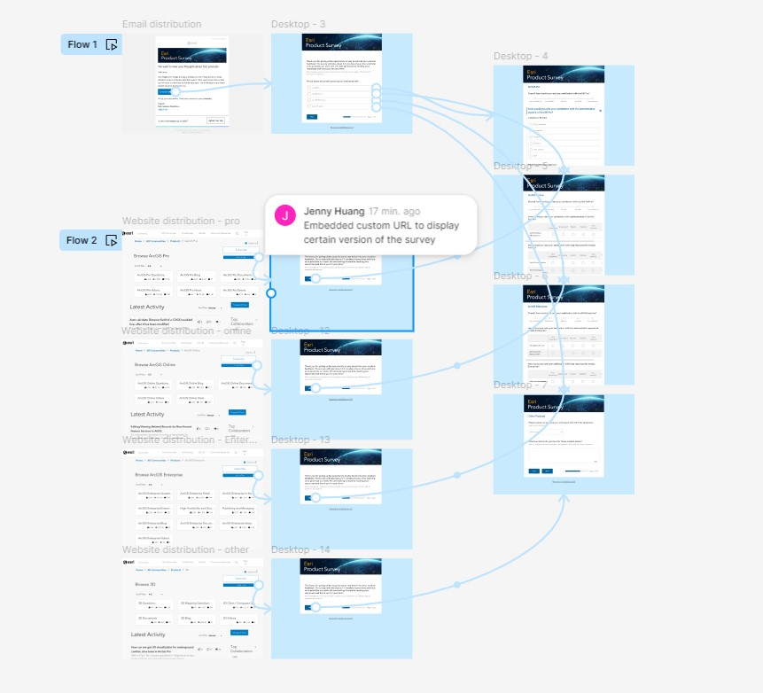
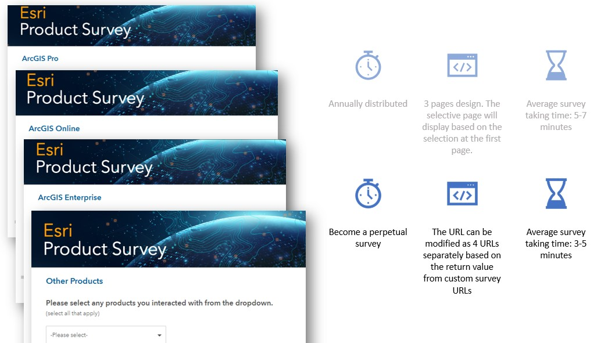
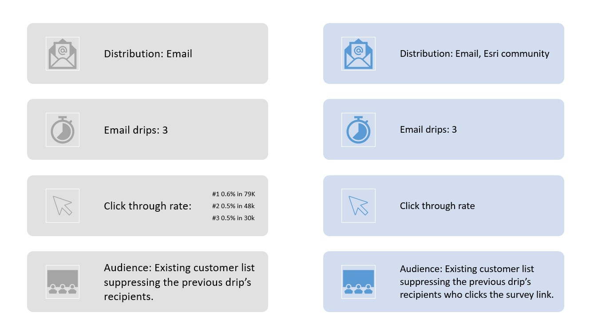
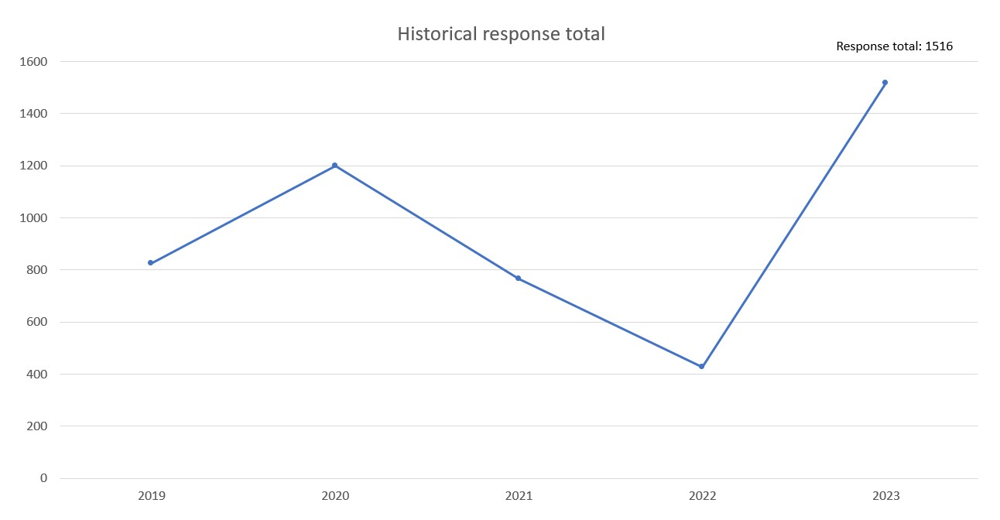

1. The dropping response rate
2. The unclear close-the-loop process
3. Unbable to change on the current data structure
4. Explore more opportunities and applications for the survey
By analyzing the past three years of product surveys in terms of distribution frequency, flow design, emailing strategy, click-through rate, and survey design, we have identified the following gaps that can be enhanced.
After discussing, we decided to prioritize how to improve the survey response rate this year.
The chart indicates that while the survey response rate was at its highest in 2020, it has significantly decreased in the subsequent years. This decline suggests potential issues in survey engagement strategies that need to be addressed to improve future response rates.
In terms of the survey's design and workflow, it is designed with three pages, dynamically displaying relevant questions based on the initial selections made by respondents. On average, it takes 5-7 minutes to complete. It'll be send out in Q3 every year.
We distributed our survey via email using three email drips, targeting an existing Pardot list. The click-through rates were 0.6% for the first drip (474 clicks out of 79K emails), 0.5% for the second drip (240 clicks out of 48K emails), and 0.5% for the third drip (150 clicks out of 30K emails). The later email drip will suppress the audience list that has received the email before.
After inspecting the possible reasons for the dropping response rate, we identified several key areas for adjustment. We need to refine the email suppression list due to the click rate reaching average rate 0.5%, indicating the need to adjust the logistic in emailing strategy. For the survey design, we must shorten the survey to encourage more respondents to submit their answers and simplify the user interface for a better experience. Additionally, changing the survey distribution frequency could help increase exposure and participation.
Due to limited time, I skipped the low-fi prototype and created a high-fi prototype using the survey form app, email configuration UI, and Figma. If you cannot view the embedded Figma link below due to access issues, please find the content in the following screenshot.
> To increase the response rate efficiently, we added new distribution channels in the updated survey workflow. Now, the survey is distributed on Esri's community product pages. We embedded custom survey URLs based on the product, ensuring that respondents see only the relevant survey version, thereby reducing the time required to complete it.
With the addition of website distribution, the survey will be open 24/7, transitioning from an annual survey to a perpetual survey.
The transition from the previous survey distribution method to the new design introduces several key improvements. Previously, surveys were distributed exclusively via email, with three email drips sent to an existing customer list, resulting in click-through rates of 0.6%, 0.5%, and 0.5% for each successive drip. The new design expands distribution channels to include Esri's community product pages, in addition to email, aiming to increase overall engagement. The email drips remain the same, but audience management has been refined to suppress recipients who have already clicked the survey link, ensuring more targeted outreach. These changes are expected to enhance the response rate by broadening survey exposure and reducing redundancy in recipient targeting.
After we implemented the adjustments above, the data outcome shows a significant increase in the response rate for the 2023 product survey, reaching a total of 1516 responses. This marks a dramatic improvement compared to the previous years. The substantial rise in 2023 indicates the success of the new survey strategies implemented, such as adding new distribution channels, refining email strategies, and improving the survey design and user experience. These changes have effectively reversed the declining trend and significantly boosted engagement.
1. Keep the response rate over 1500.
2. Apply Product survey to more distribution channels.
3. Customize and shorten the survey to improve the UI/UX experience.